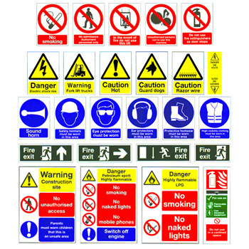

Attire Rules
- Collared shirt or T-shirt and full-length trousers.
- Do not wear loose-sleeved clothing and jewellery.
- Do not use compressed air to clean your clothing.
- Covered shoes must be worn at ALL time – NO open tops or open toes.
- Students with long hair must tie up their hair to avoid entanglement with rotating machinery.
- Certain laboratories and workshops required the use of additional safety equipment and
Personal Protective Equipment (PPE) such as goggles, safety glasses, masks, gloves, ear
plugs/earmuffs as instructed to protect against any workplace and machine hazards.
FIRST AIDS
In the event of a laboratory or workshop accident, students must immediately inform the
lecturer-incharge
or
TSO.
FIRE EMERGENCY EVACUATION
Students must know the location of fire extinguishers.
Do not obstruct them with your personal belongings.
IN THE CASE OF ACCIDENT or FIRE :
- Do not panic.
- Quickly and calmly inform the lecturer-in-charge or TSO or follow the SP’s
Three-step Emergency Procedure:
- For ambulance or fire brigade, call 995
- Instruct them to enter Gate 1 (Main Entrance) along Dover Road
- Inform Campus Security by calling 6772-1234 for all emergencies and incident reporting.
- Be familiar with the evacuation route and designated assembly area for the laboratory or
workshop
you are working in. These are posted on exit doors or at convenient location(s) within the
laboratory or workshop.
Housekeeping Habits
- After using the tools, always return it back to their designated positions in the tool racks.
- Always keep the workplace neat and tidy after use.
- Remove debris and chips off the machines or workbenches after use.
- Recycle unused or leftover materials at the recycling area.
Safety Symbols

FAB Academy Student Agreement
Fablab SP is responsible for:
- Teaching principles and practices of digital fabrication
- Arranging lectures, recitations, meetings, and events for the class
- Evaluating and providing feedback on student work
- Offering clear standards for completing assignments
- Certifying and archiving student progress
- Supervising class preparation
- Reviewing prospective students, instructors, and labs
- Providing central staff and infrastructure for students, instructors, and labs
- Publicizing the program
- Promoting a respectful environment free of harassment and discrimination
I am an EP1000 Digital Fabrication & Prototyping Fundamentals student, responsible for:
- Attending class lectures and participating in reviews
- Developing and documenting projects assigned to introduce and demonstrate skills
- Honestly reporting on my work, and appropriately attributing the work of others
- Working safely
- Leaving workspaces in the same (or better) condition than I found them
- Participating in the upkeep of my lab
- Promoting a respectful environment free of harassment and discrimination
Signed by committing this file in my repository